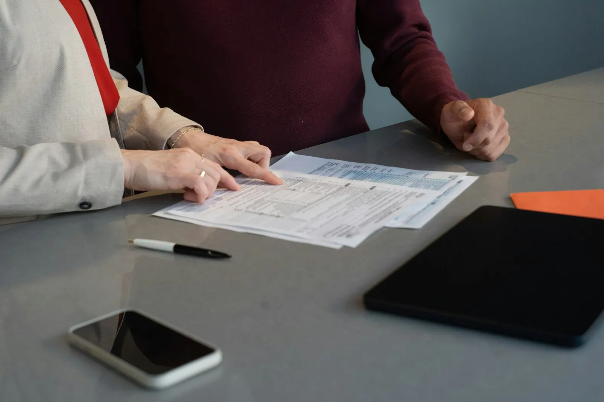
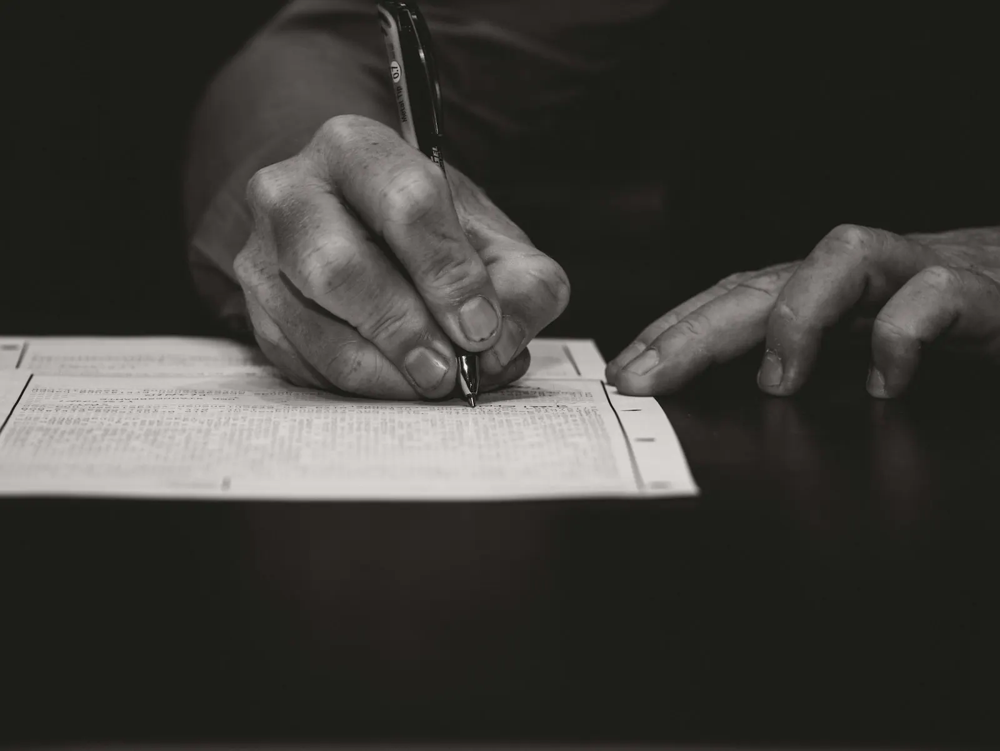

Bijstand bij verhoor
Opgeroepen door de politie? U hebt recht op een advocaat, al voor het verhoor begint. Jean-Baptiste volgde hiervoor de Salduzopleiding.
Moet u verhoord worden, loopt er een strafzaak of zit u met een juridische vraag waar u niet uitkomt? Bij Henri en Jean-Baptiste Nottebaert vindt u begrip, snelle reactie en een advocaat die alles doet voor de beste oplossing.
"Heel begripvol, ze zoeken en doen alles voor de beste oplossingen en reageren rap."
Christel, op GoogleEen juridisch probleem komt zelden op een goed moment. Wij zorgen dat u weet waar u staat, en dat er iemand naast u staat.
Opgeroepen door de politie? U hebt recht op een advocaat, al voor het verhoor begint. Jean-Baptiste volgde hiervoor de Salduzopleiding.

Verdediging voor de politierechtbank en de correctionele rechtbank, en indien nodig tot in cassatie. Jean-Baptiste behaalde het getuigschrift cassatie in strafzaken.

Twijfelt u of u een advocaat nodig hebt? Leg uw vraag voor. We zeggen eerlijk wat de mogelijkheden zijn, en wat niet.
Sinds de Salduzwet heeft iedereen die verhoord wordt een aantal duidelijke rechten. Kies uw situatie.
Dit is algemene informatie. Uw situatie bespreekt u best persoonlijk met een advocaat.

Het kantoor aan het Voorburg is ingeschreven bij de balie van Oudenaarde. U krijgt een vast aanspreekpunt, en wie u helpt kent uw dossier.
U belt of mailt, en u hoort snel van ons. Is het dringend, zoals een verhoor, dan zoeken we meteen een oplossing.
Uw verhaal, uw vragen, uw zorgen. Pas daarna kijken we naar de juridische kant.
Soms is dat een procedure, soms een goed akkoord. U beslist, met alle informatie in handen.
Het kantoor ligt aan het Voorburg, in het centrum van Oudenaarde. Liefst op afspraak, zodat er tijd voor u is.
| Maandag | 8u30 tot 19u |
| Dinsdag | 8u30 tot 19u |
| Woensdag | 8u30 tot 19u |
| Donderdag | 8u30 tot 19u |
| Vrijdag | 8u30 tot 19u |
| Zaterdag | Gesloten |
| Zondag | Gesloten |
Een eerste schets, op maat van Vander Schelden & Nottebaert. U kiest de stijl, ik zorg dat alles klopt.
één keer, alles inbegrepen
Geen voorschot. U betaalt pas als de site klaar is.
Hosting en domein op uw naam. Een aanpassing vraagt u per keer aan.
Hosting en domein inbegrepen. Nieuwe acties, verlofdagen en wijzigingen zet ik er voor u op.
mijn aanraderStijn Vranken · 0496 25 14 45 · info@digital-impression.be